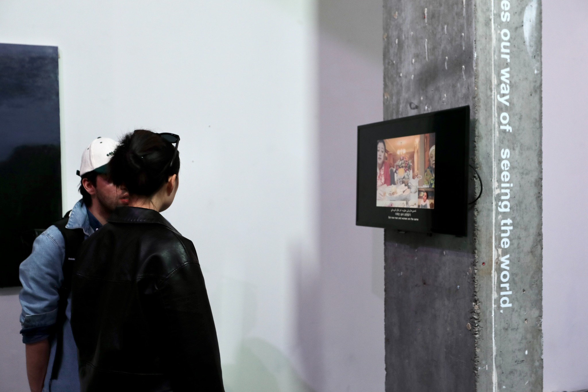
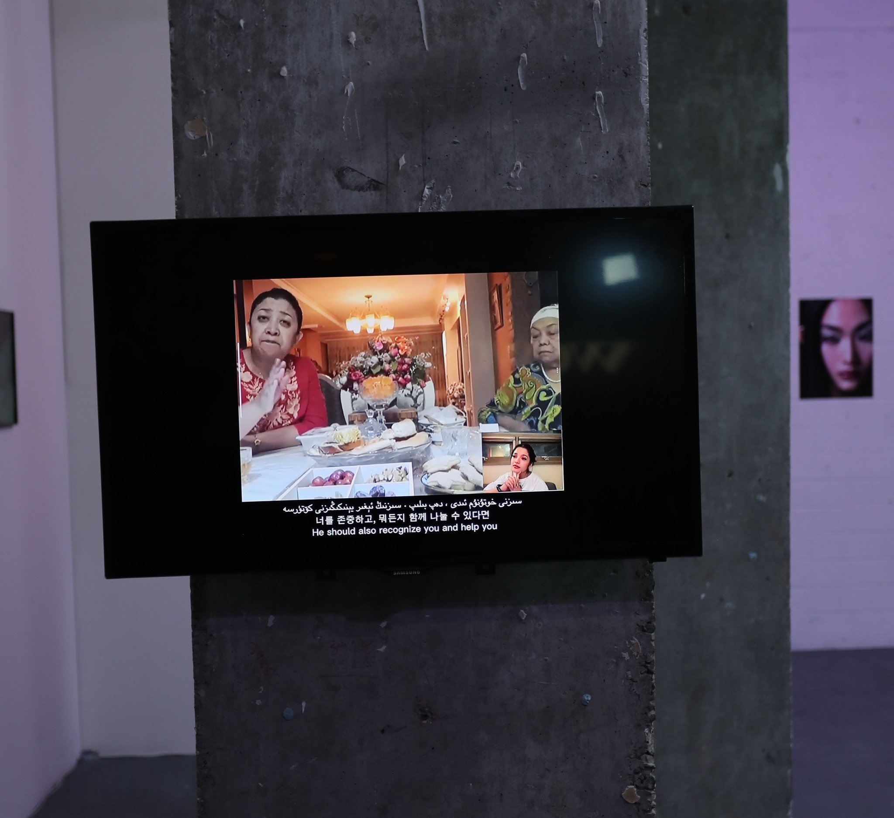
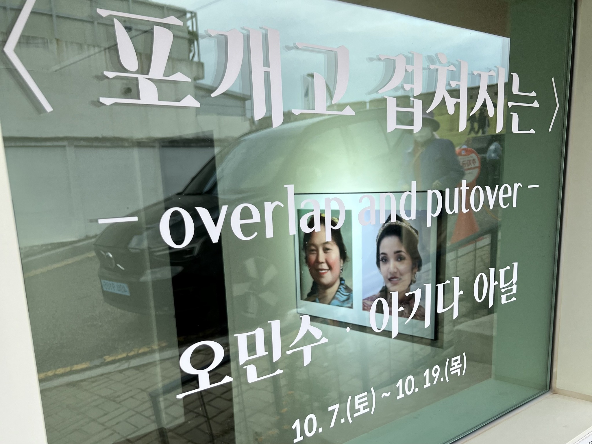
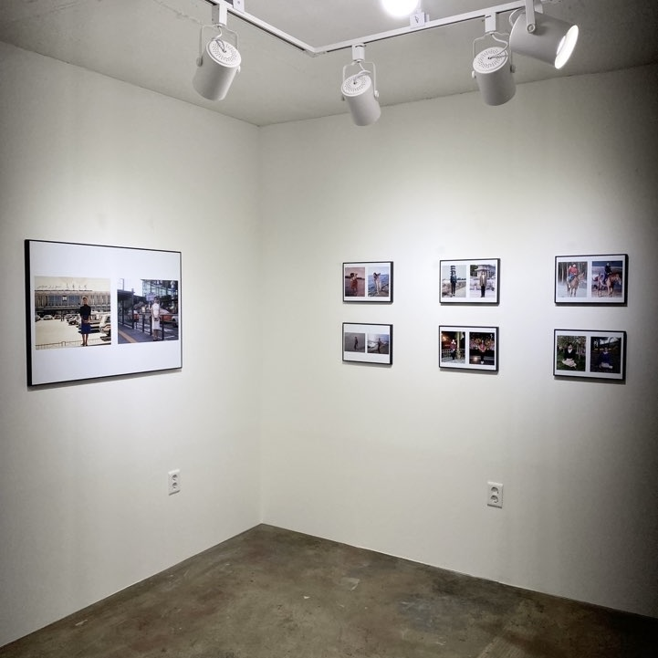
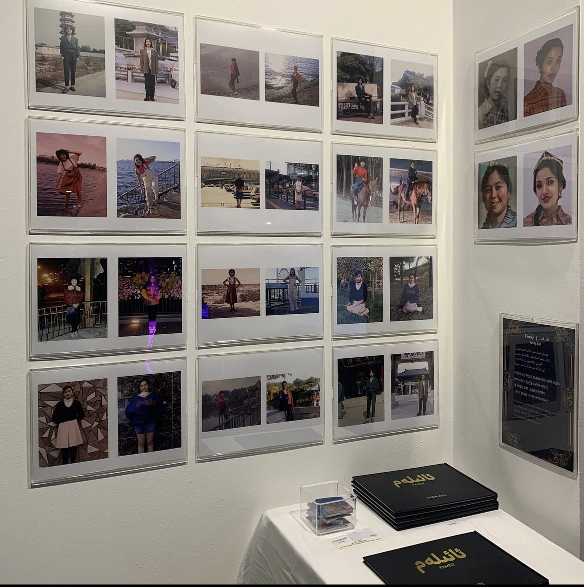
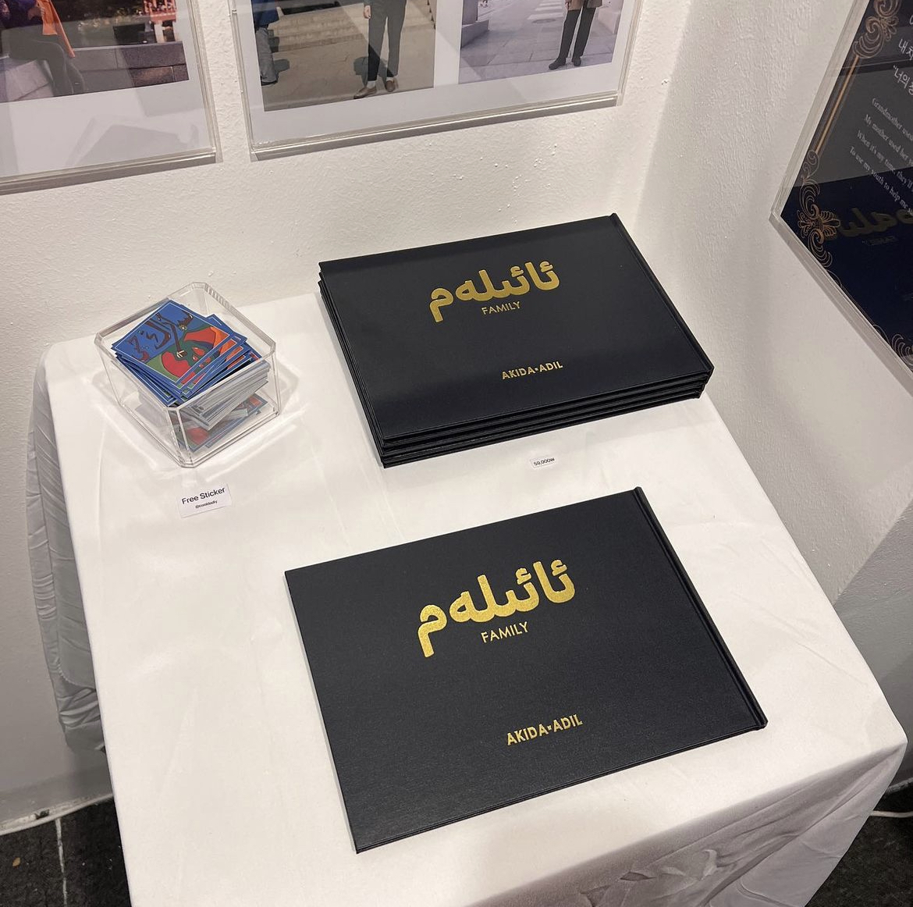
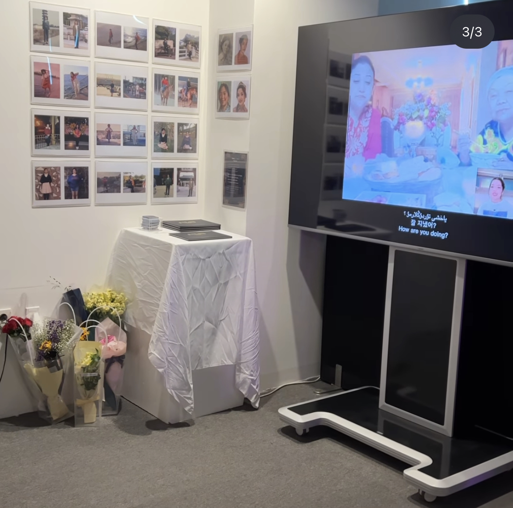
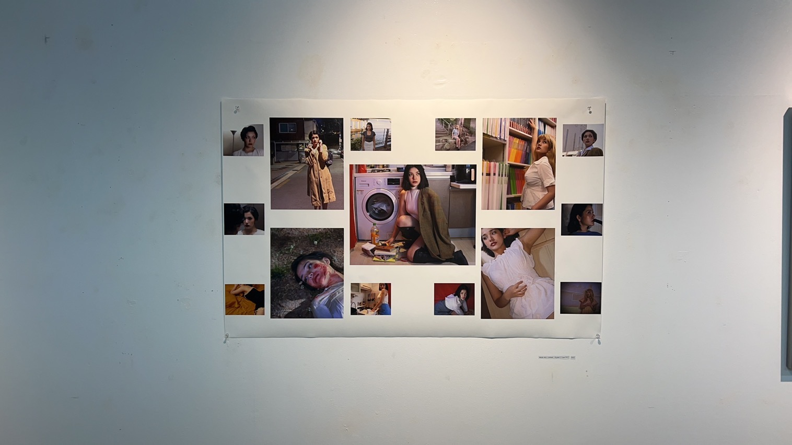
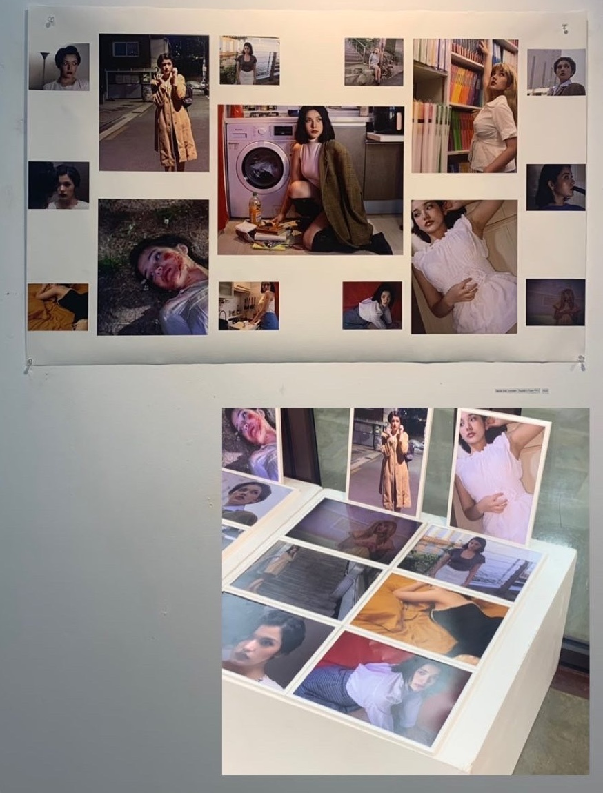

Indra Gallery — Human Voyages
London, 2026


Art Space EGO — overlap and putover
Seoul, 2023


Hongik University Visual Design Graduation Exhibition
Seoul, 2022



마포캘러리
Seoul, 8–15 July 2022

